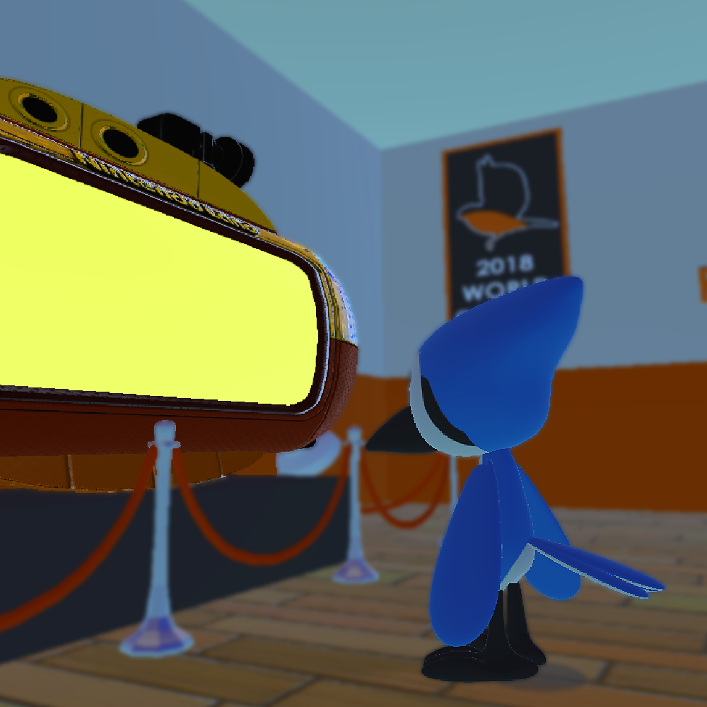

Clipped Wings
Jay the Blue Jay was a loud and arrogant bird, with a love for daring aerial stunts and tricks. In Clipped Wings, Jay's world crashes down when an accident robs him of his ability to fly. Stripped of his wings and grounded for the first time in his life, Jay embarks on a journey through the five stages of grief, fighting with his new reality.
Design & Focus
As the sole developer, I designed the entire experience, centered around showcasing a positive journey through mental health.
- The Narrative Arc: Focused on symbolizing the stages of grief (Denial, Anger, Bargaining, Depression, Acceptance) through unique level mechanics.
- The Core Loop: Defining core gameplay around Jay's limited movement and environmental puzzles influenced by his emotional state.
- The Map: Designing levels and layouts to represent abstract emotional landscapes and the struggle of acceptance.
- The Framing: Crafting Camera Mechanics to frame the world for maximum emotional and narrative impact.
Programming & Mechanics
- Built a responsive player movement controller specifically designed for the grounded bird protagonist.
- Developed Camera Systems for cinematic and gameplay use.
- Engineered a flexible and reusable Dialogue System for advancing the story.
- Implemented all core Puzzle Mechanics for the Denial, Anger, and Bargaining stages (C# scripting).
- Created an efficient Save System to persist the player's progress.
- Custom Cinematic System for scripted in-engine moments.
- Designed and coded the User Interface System for menus and in-game HUD.
Key Features - Treasures Discovered
- Anxiety System: A dynamic mechanic where red hazard zones cause the camera to shake and a vignette to appear, symbolizing Jay's growing anxiety.
- Denial Mechanic: Allows the player to temporarily 'deny' a single red anxiety area, removing it to solve a puzzle, but causing a previously denied area to reappear.
- Anger/Punch Mechanic: Players can break through specific walls by punching, with the force and effectiveness scaled by Jay's rising anger level.
- Object Manipulation: Implemented a grab and push system to block anxiety zones or move platforms.